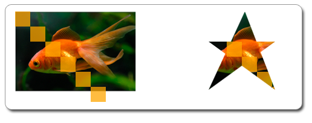

This topic describes how to use a geometric mask to clip a region of a layer.
To clip a region with a geometric mask
The example that follows uses a geometric mask to clip an image and several rectangles. The following illustration shows the original bitmap on the left, and the bitmap clipped to the geometric mask on the right.

To clip the drawing as shown in the preceding illustration, you create an ID2D1PathGeometry and use it to define a star. The following code shows how to do this.
// Create the path geometry.
if (SUCCEEDED(hr))
{
hr = m_pD2DFactory->CreatePathGeometry(&m_pPathGeometry);
}
// Write to the path geometry using the geometry sink to create a star.
if (SUCCEEDED(hr))
{
hr = m_pPathGeometry->Open(&pSink);
}
if (SUCCEEDED(hr))
{
pSink->SetFillMode(D2D1_FILL_MODE_WINDING);
pSink->BeginFigure(D2D1::Point2F(20, 50), D2D1_FIGURE_BEGIN_FILLED);
pSink->AddLine(D2D1::Point2F(130, 50));
pSink->AddLine(D2D1::Point2F(20, 130));
pSink->AddLine(D2D1::Point2F(80, 0));
pSink->AddLine(D2D1::Point2F(130, 130));
pSink->EndFigure(D2D1_FIGURE_END_CLOSED);
hr = pSink->Close();
}
SafeRelease(&pSink);
Call CreateLayer to create a layer.
[!Note]
Starting with Windows 8, you don't need to call CreateLayer. In most situations performance is better if you don't call this method and Direct2D manages the layer resources.
Â
Call PushLayer with the geometry mask to push the layer. Draw the content to clip, then call PopLayer to pop the layer. This produces the star-shaped drawing. The following code shows how to do this.
HRESULT DemoApp::RenderWithLayer(ID2D1RenderTarget *pRT)
{
HRESULT hr = S_OK;
// Create a layer.
ID2D1Layer *pLayer = NULL;
hr = pRT->CreateLayer(NULL, &pLayer);
if (SUCCEEDED(hr))
{
pRT->SetTransform(D2D1::Matrix3x2F::Translation(350, 50));
// Push the layer with the geometric mask.
pRT->PushLayer(
D2D1::LayerParameters(D2D1::InfiniteRect(), m_pPathGeometry),
pLayer
);
pRT->DrawBitmap(m_pOrigBitmap, D2D1::RectF(0, 0, 200, 133));
pRT->FillRectangle(D2D1::RectF(0.f, 0.f, 25.f, 25.f), m_pSolidColorBrush);
pRT->FillRectangle(D2D1::RectF(25.f, 25.f, 50.f, 50.f), m_pSolidColorBrush);
pRT->FillRectangle(D2D1::RectF(50.f, 50.f, 75.f, 75.f), m_pSolidColorBrush);
pRT->FillRectangle(D2D1::RectF(75.f, 75.f, 100.f, 100.f), m_pSolidColorBrush);
pRT->FillRectangle(D2D1::RectF(100.f, 100.f, 125.f, 125.f), m_pSolidColorBrush);
pRT->FillRectangle(D2D1::RectF(125.f, 125.f, 150.f, 150.f), m_pSolidColorBrush);
pRT->PopLayer();
}
SafeRelease(&pLayer);
return hr;
}
Â
Â